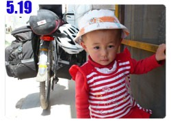
迷路而意外跑來的紅山窯，一早從這邊出發，旅館的人說從這邊走是可以到張掖的，
所以不算迷路的太慘，以我的邏輯，只要不需要回頭走，就算往前要繞一個圈子才會到，這樣都不算迷路的太慘。
只是離開紅山窯之後所走的路，並不是昨天走一半就不見的312國道，而是高速公路旁邊的輔路。
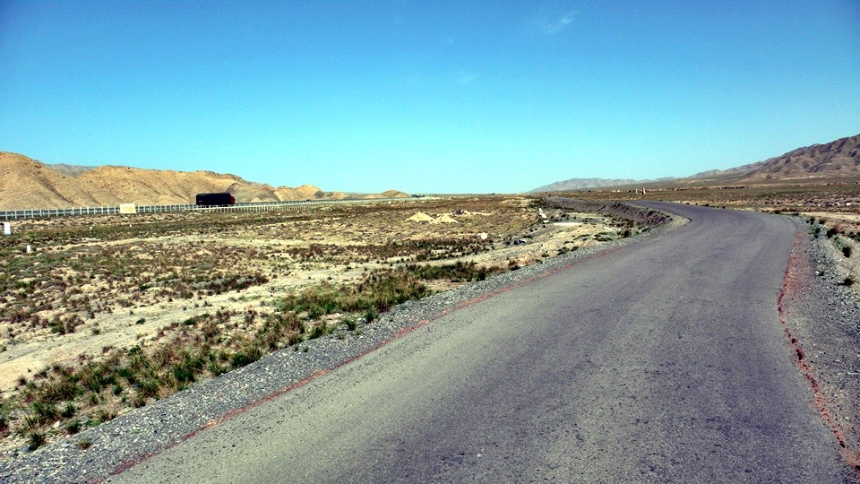
這真是意外的收穫，沿著高速公路走，很節省時間，同時又不會被大卡車影響心情。
一大早的氣溫還挺涼爽的，等過一個小時，八點多的時候，氣溫又像昨天那樣節節的高升~_~
沒有早餐店又不想餓肚子騎車，看到商店的時候真是超開心的，三步蹦做兩步跑進去，迫不及待想看裡面有賣些什麼？
扣掉泡麵奶粉這些不能馬上吃的東西，我買了一包蛋黃餅乾、兩包純牛奶和三包花生米，七塊五搞定。
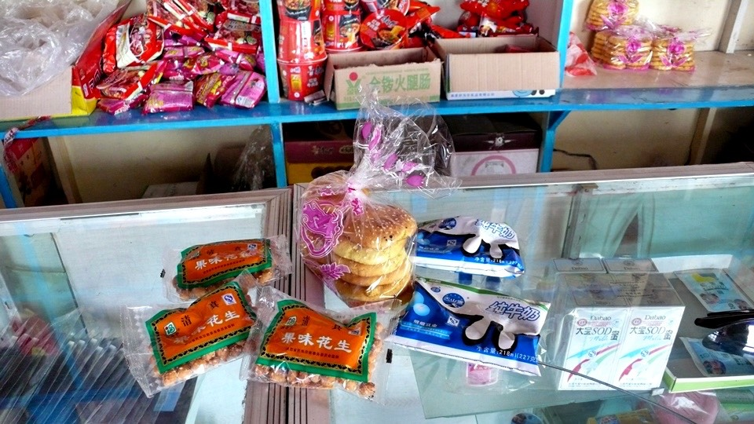
早餐就喝牛奶配花生米，垃圾都是塑膠袋，先放在褲子口袋裡，等到城市再找地方丟。
輔路大概是海拔兩千兩百公尺的平原，很漂亮也很荒蕪，我不想在這麼寧靜又原始的地方留下垃圾。
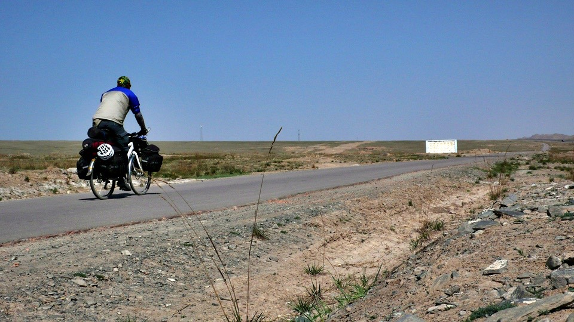
因為眼睛所看到的景色，都是寬廣的平原和遠處的山脈，所以不覺得自己身在高海拔中，
真是一山還有一山高，視野所及的部分，只有天空所佔的比例很明顯的增加很多。
藍藍的天空是漸層的顏色，一片雲都沒有，只有一粒太陽在我背後高掛著。
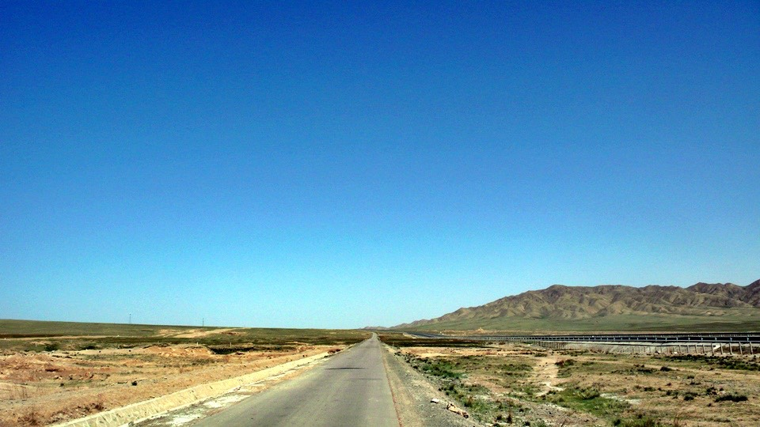
路上看到小土堆，還排列了幾個石頭和一個石碑，這.....該不會就是我所想像的那個裡面有埋一個人的東西吧~_~
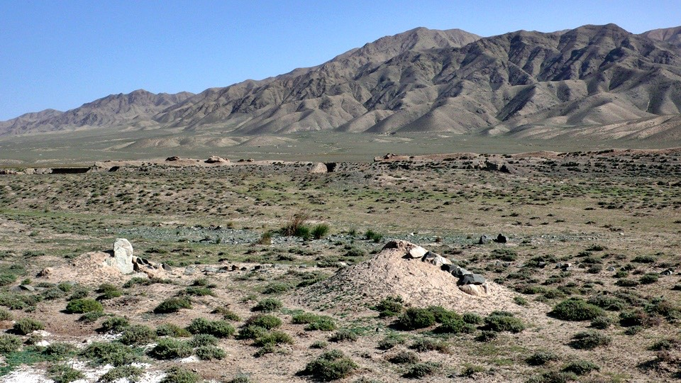
道路的兩旁都是不毛之地，因為輔路不像高速公路那樣有護欄，所以我愛跑去哪就跑去哪，
跑進那荒蕪的土地上，這裡只長了如鐵絲般堅硬的植物，一叢一叢的，葉子像針一樣銳利，
而且就算用腳在草上踩個幾下(對不起，我很無聊~_~)，硬梆梆的草就跟沒事一樣，一點也不受影響。
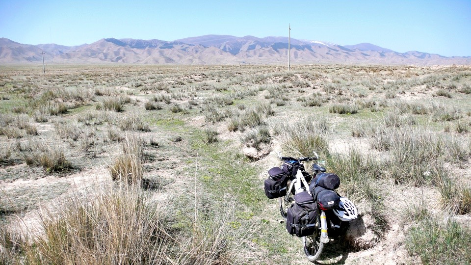
有這麼堅忍的耐力，難怪能夠生長在這種奇怪的地方。
低頭仔細的看，愕然發現在這些硬梆梆的草裡面，很靠近土的地方，開了幾朵黃色和紫色的小花。
原來不一定要像針氈那樣硬派的植物才能生存，柔弱如小花也是默默的在努力生長著。
這樣不毛之地，居然還生產蘑菇，一路上好多小商家都掛著紅色的塑膠袋，表示有在賣蘑菇，可是我怎麼也看不到是種在哪裡。
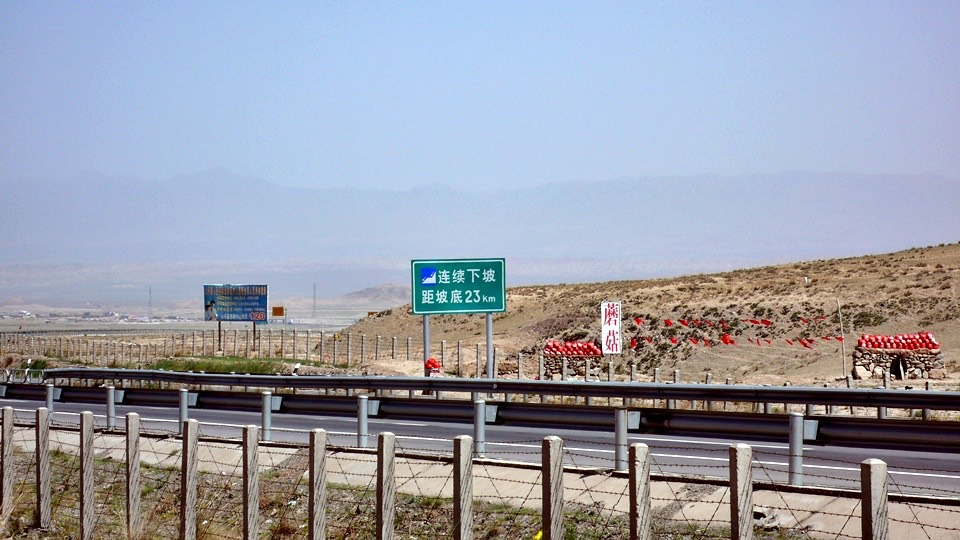
沿著輔路慢慢的走，優哉的騎，每天早上都是慵懶的出發，愉快的吃飯，
然後下午三、四點才開始因為今天還有一大段路才到目的地而趕路，暗自發誓明天一定要早起早出發，
然後隔天又陷入一樣的慵懶迴圈，在中午以前騎車都是很令人開心的，吃完午飯就會逐漸疲憊起來。
過午後太陽就逐漸增強，而逆風也是過午後之後會越來越大，一天可以分成兩種心情。
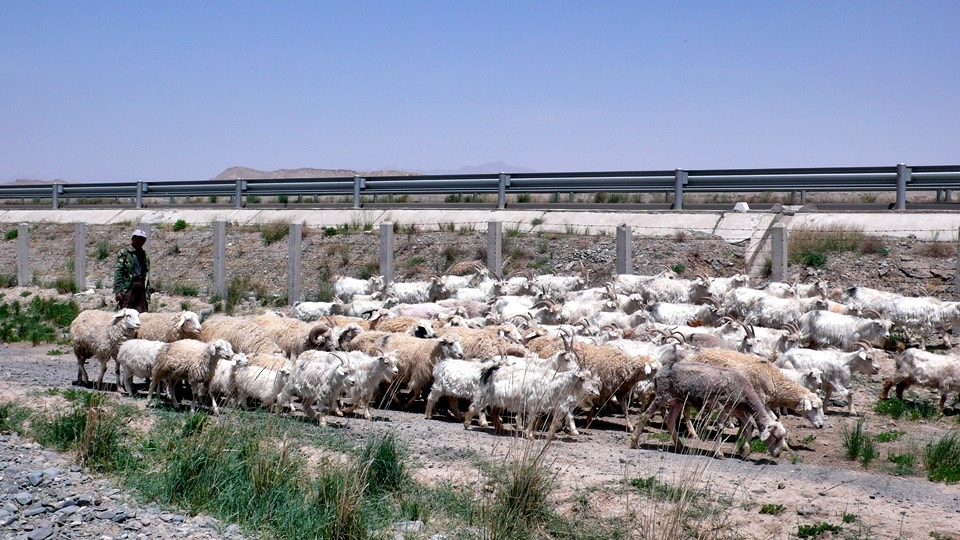
中午在一個叫丰城的地方吃飯，整個是一個很乾的小城鎮，
脫下太陽眼鏡，很不能適應這麼亮的陽光，不論看哪個地方，都像是過度曝光的照片一樣。
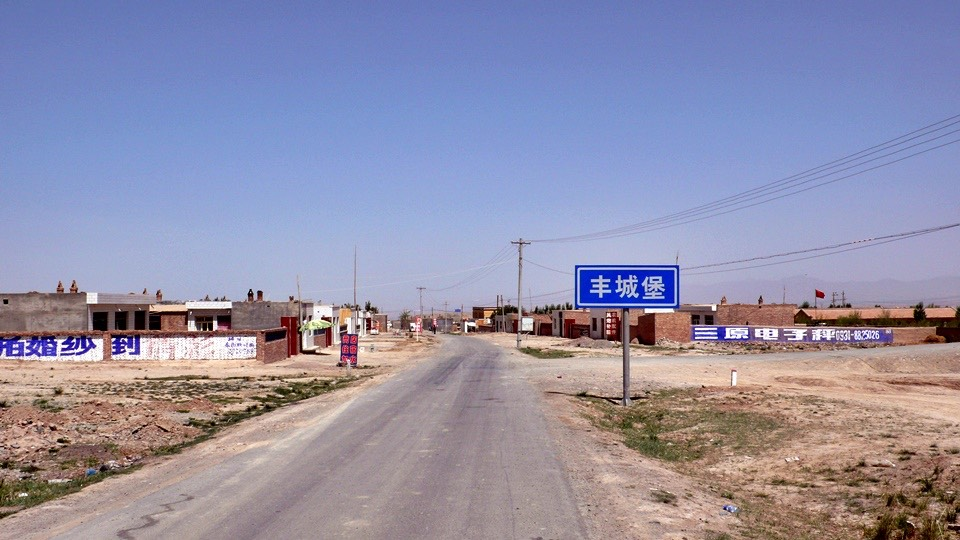
午餐點了一碗滷肉拉麵，好吃得令人想抱著老闆哭泣T_T
而且很大一碗，可以讓我慢慢吃，吃到撐為止，豆腐跟滷肉搭配起來好好吃的說。
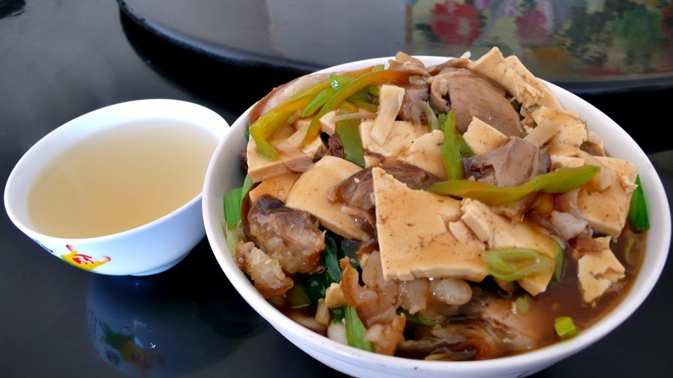
吃飯的時候一個好可愛的小女孩在我面前跑來跑去。
跟我今天早上看到的，整個臉曬的跟關公一樣的小孩大不相同，我還以為這邊海拔高，日曬大，
所以大家的臉不是黑黑的就是紅紅的，原來還是有卡哇伊的。
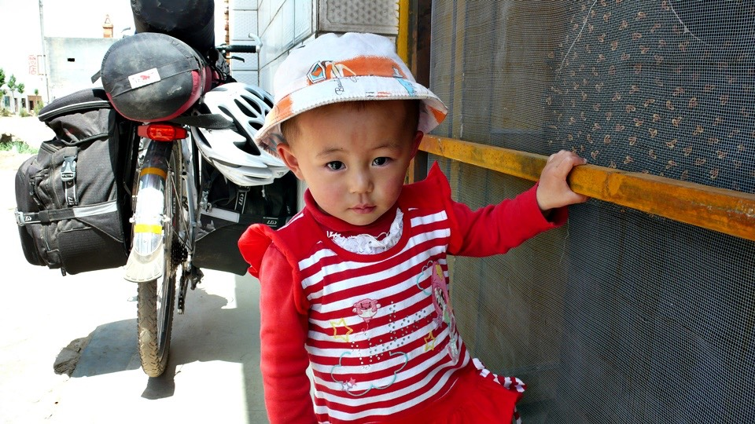
吃完午飯繼續走我的輔路，走著走著輔路就不見了，剩下一個缺口讓我騎上高速公路~_~
反正騎單車上高速公路這檔事我很有經驗了，就再騎它一回吧。
這條高速公路真是很可惜，路蓋的這麼好，這麼筆直，可是車子稀疏的可憐，
整條路上沒什麼車子經過，我試著在高速公路上滾來滾去，也絲毫沒被車子按喇叭，因為根本沒車。
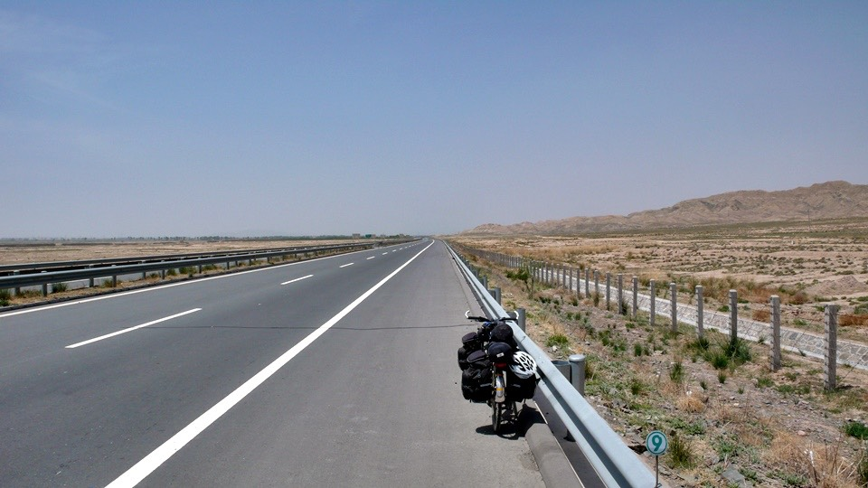
騎在高速公路上，只要讓我可以平安的騎個18公里，從交流道下去就好了，
希望在這之前不要被公安的巡邏車抓到，默默祈禱沒多久，公安巡邏車就呼嘯而過，
但什麼事也沒發生，像是沒看到我一樣，難道這一條路不是高速公路嗎@@"
等我從交流道下去，偷偷的走旁邊繞過收費站員工的眼光，往回頭一看，這的確是高速公路沒錯呀！
真是萬幸剛剛公安沒有把我攔下來，其實還蠻好奇被抓到會怎麼樣就是了。
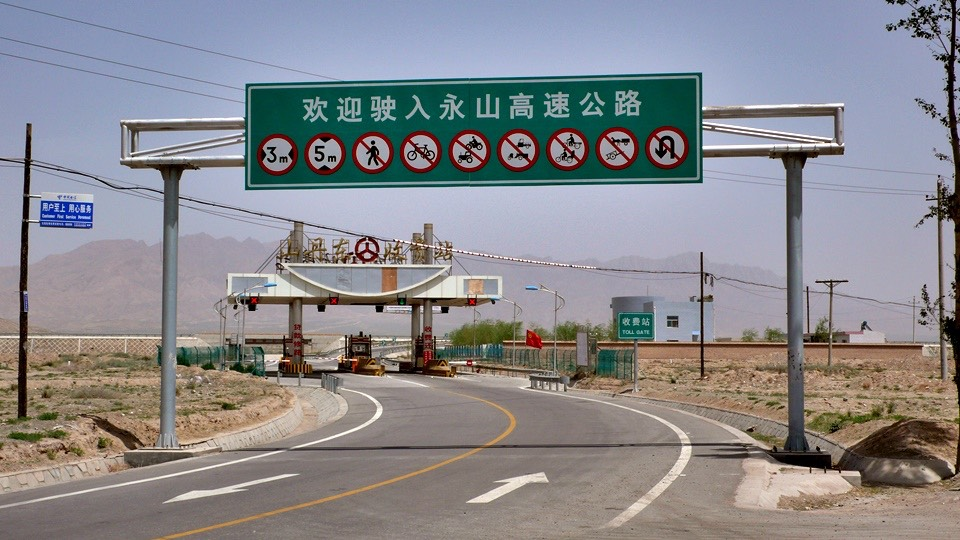
下交流道的地方叫做山丹，一下之後就先躲去加油站休息一下，感覺好像又快要中暑了。
先買一瓶果汁牛奶，不要白白佔人家的地方休息。
中國的加油站也叫做中國石油，員工看我一副旅行的裝扮，就跟我說了一句
『中國石油，為你加油』
這句台詞好熟悉呀@@"難道不只名字一樣，連企業口號都跟台灣的一樣嗎？
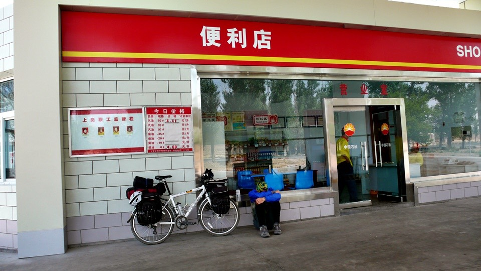
喝完果汁牛奶，本來只想乘個涼，結果突然一陣睡意襲來，不支就睡去。
一睡就是半個多小時，而且是睡到口水都流出來那種深沉的睡眠，我有這麼累嗎@@"
隨著海拔的降低，景色也從令人鼻酸的不毛之地，漸漸轉變為綠草如茵的農地。
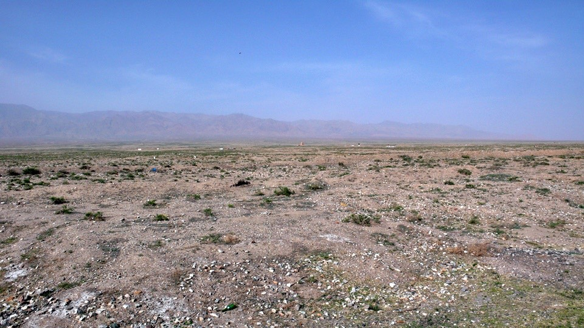
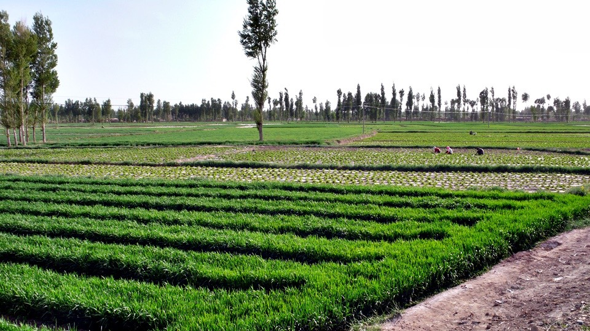
因為遮陽帽被大風吹走了，現在不知道隨著水道飄去哪裡，
但西曬的太陽威力一點都不減弱，少了一個好不容易才買到的好裝備，非常心疼。
臉雖然塗了防曬油，但和眼前的太陽相比，效果應該不大，有樣學樣跟著農地裡的農婦把臉用口罩包起來。
又變成銀行搶匪第二彈。
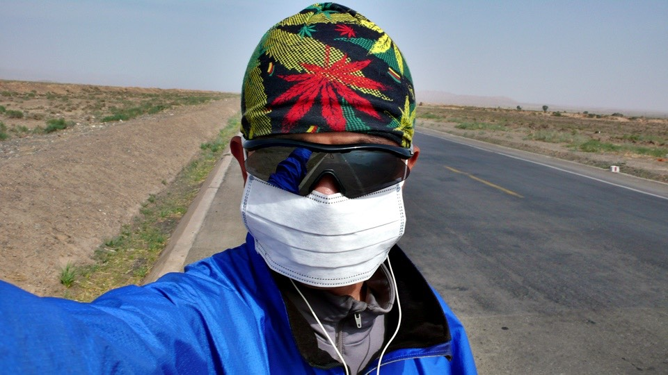
戴著口罩騎車很爽，臉沒那麼發燙了，路邊有兩個人騎機車追上我，
話還沒說兩句，就拿出V8對著我猛拍，是在拍紀錄片嗎@@"
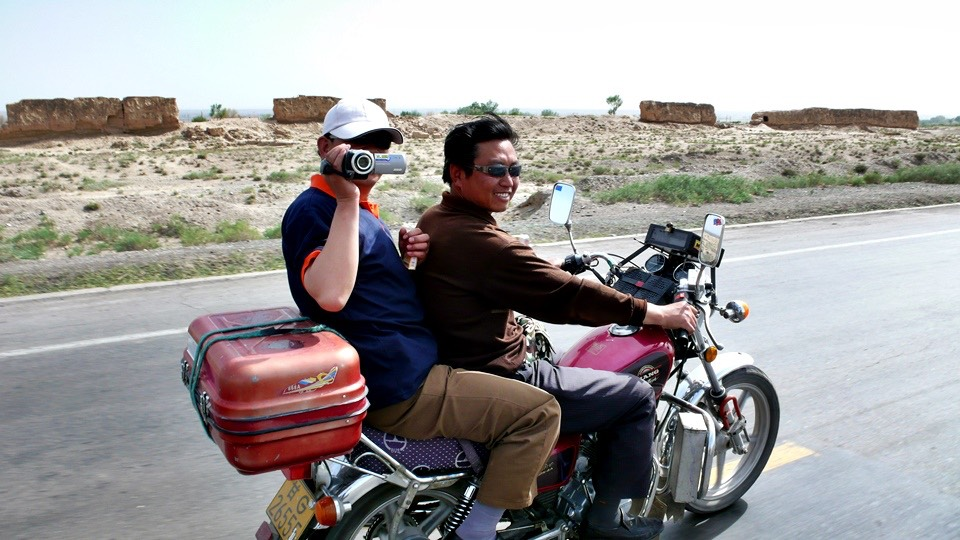
晚上七點抵達張掖，這邊給我的感覺超級像洛陽的，江某在張掖的前頭加上一個『金』字，
看來對這裡的發展還蠻有期待的樣子。
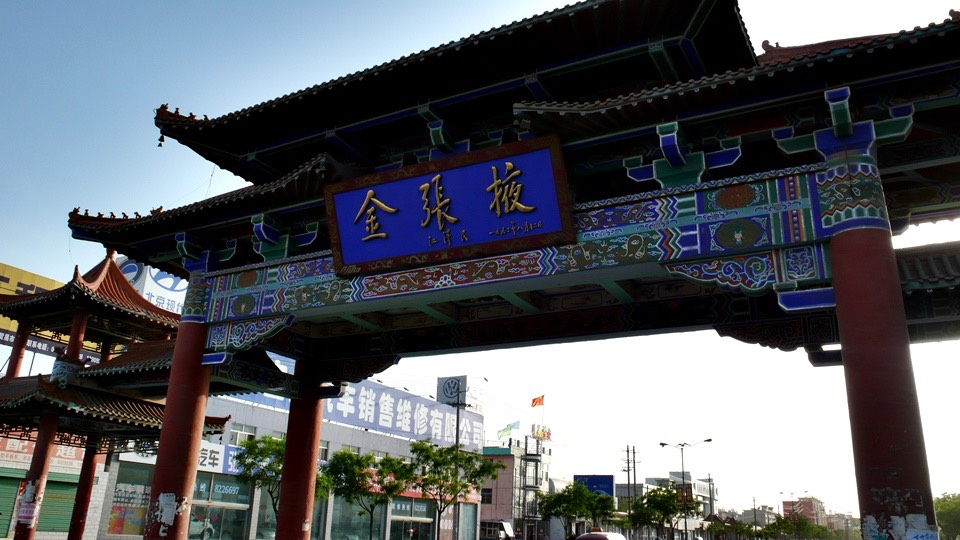
雖然街上的旅館很多，但是找旅館的天線跟我說，那一間位在四樓的旅館就是今天的落腳處。
扛著重達五十公斤的小多加行李爬到四樓，不知道為什麼打定主意就是想住在這邊，只能說是上天恩惠的安排。
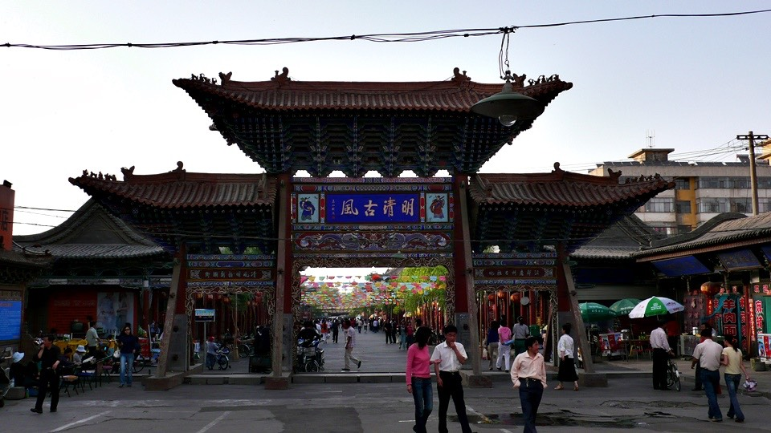
單人房50塊，我吐吐舌頭說有沒有便宜一點的房間？
結果有一間四人房，一張床20元，只有我一個人睡，等於我花20元就睡到比單人房還大的房間。
好康還沒完，這間房間有自己專屬的浴室和廁所，浴室居然還有蓮蓬頭，而且24小時都供應熱水。
付完錢，胡謅完基本資料，脫下髒兮兮的衣服趕快跑去洗個舒服的熱水澡。
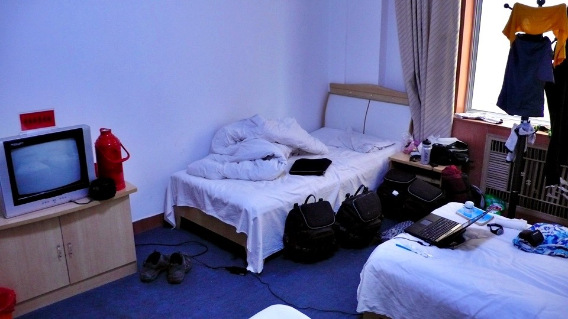
這是我旅行以來第二次洗熱水澡，而距離上一次，已經有20天的時間，洗熱水澡已經是種奢侈的享受。
既然奢侈，那就慢條斯理的好好洗乾淨一點，下次還有機會洗熱水澡不知道是什麼時候了。
骯髒的衣服，用熱水泡洗衣粉之後再洗，特別乾淨。
雖然洗衣粉已經是買用冷水就可以溶解的那種，但還是很不好洗，現在有熱水就方便多了。
洗過衣服的水，比拖過地的還髒，黑的像墨汁，這樣的衣服我居然一直穿在身上T_T
身上煥然一新還飄著香味，選這間旅館的另一個好處就是，4樓是旅館，3樓居然就是網吧！
那等一下遊記整理好就可以下去樓下打發時間，不用去街上找哪裡有網吧。
打開電腦正準備回顧今天發生了什麼事情，更不可思議的事情發生了。
一定是神明默默的安排，這裡居然有無線網路的訊號，而且還是沒有加密碼的。
滿心惶恐，按下連線的按鈕，心理默念禱告。
真的就連線成功了！！！！
晚餐就用旅館提供的熱水泡甜甜的紅糖來喝，配上今天早上買的蛋黃餅乾，也就搞定了一餐。
身上的存糧又被吃得差不多了，只剩下分量還能沖泡一次的紅糖、一根熱狗和一個磚頭燒餅。
城鎮和城鎮的距離越拉越遠，明天得找個機會好好補給一下存糧比較保險。
結果今天只花20元，就住到超大的房間，洗了熱水澡，有專屬的衛浴，還有免費的無線網路可以用！
我明天想多在這裡住一天行嗎@@"
繼續閱讀：5.20 郊遊的心情
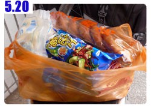
中國-人民幣－ 1：4.3 台幣
5.19
總計：40元
雜貨店牛奶兩包、花生三包、餅乾一包7.5元、冰棒一支0.5元、午餐魯肉拉麵5.5元、橘子汽水2.5元、果汁牛奶4元、住店20元